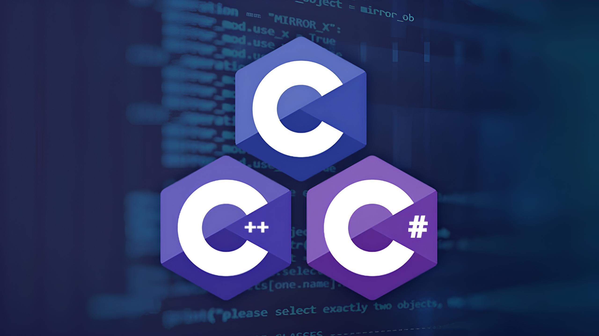

О сайте
Этот сайт представляет собой справочник по языкам программирования. Здесь вы найдете краткую информацию о популярных языках программирования, а также полезные руководства.
Этот сайт представляет собой справочник по языкам программирования. Здесь вы найдете краткую информацию о популярных языках программирования, а также полезные руководства.